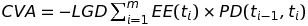
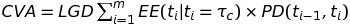

この章では、ここまで無視してきたwrong-way risk(WWR)込みのCVAについて扱う。
Wrong-way risk(WWR)：exposureとカウンターパーティーのcredit qualityの間の好ましくない依存のこと。すなわち、カウンターパーティーがデフォルトしそうなときに、exposureが増大し、そうでないときには、exposureが減少するような関係を指す。
WWRは、著しく低く見積もられている。
credit spread × exposure
 (14.2)
↑の式では、各量が独立であることを仮定。将来的には、どのように信用リスク（デフォルトリスク）と市場リスク（exposure）を統合するかという難しい課題を考えなければならない。
最も単純な例は、モーゲージの提供者（景気の後退期に保有不動産の資産価格が下がり、持ち家所有者によって高いデフォルト率に直面する）。
デリバティブにおいては、異なるアセットをまたいだWWRを明らかに含む古典的な例として、以下がある。
Duffee(1998):
金利低下局面（中央銀行の介入で金利低下かつ、高いデフォルト率の環境を招く不景気として解釈される局面）での企業のデフォルト群についての説明。
銀行はここ数年、無担保の金利スワップの固定受けポジにて、これを経験している。そのポジションは、カウンターパーティーの財務状態のpotential declineを伴って、ITMへ移行する（例えば、sovereignや企業）。この影響はクレジットスプレッドと金利の強いつながりを通じて、実際にデフォルトが発生しなかったとしても、cross-gamma効果を生み出すWWRとして認識されている。
正確にxVAを価格付けしヘッジするには、WWRの勘案が必要。
主な特徴は表17.1参照。
WWRの定量化には、credit, collateral, funding, exposureの間の関係を何らかの形でモデル化し、含める必要がある。しかし、それには多くの問題がある。以下は、その一部。
 (17.1)
.
.
.
.
一方で、PDとEEの間の関係を正確にモデル化しようとするのは、とてもむずかしい。
単一の相関パラメータで、exposureとカウンターパーティーのデフォルトを関係づける。
図17.1：
図17.2：
Credit qualityよくなるほど、条件付きEE大きくなる
例1:
高いcredit qualityの国債を担保にしたのIRS（払い）場合：
金利↑→Pv(IRS)↑、担保価格↓（WWR）
高いcredit qualityの国債を担保にしたのIRS（受け）場合：
金利↑→Pv(IRS)↓、担保価格↓（RWR）
例2:
原資産の通貨でのキャッシュを担保にした通貨スワップ。
結果は、図17.3
.
.
.
.
各アプローチ（17.4.1-17.4.3）と、考慮すべき話。
credit spreadを確率過程として、モデリングに必要な原資産のモデルと相関を持たせるもの。
デフォルトはEEの過程より発生し、結果として出てくる条件付きEEは、デフォルトの発生したパスに対してのみ、通常の方法で計算できる。credit spreadのパスがまず生成され、デフォルトの観測されたケースにおけるパスのみシミュレーションすればよいので、実装するのに扱いやすい。必要となる相関パラメータもヒストリカルなcredit spreadや関係あるほかの市場変数から直接観測できる。
図17.4 hazard rate modelによって、defaultに条件付けされた金利のシミュレーション.
Vacicek model(flat interest rate term structure), lognormal hazard rate(no negative credit spread), volatility(80%), counter party spread(500bps), LGD(60%)
WWR, RWRを容易に特定できる、対称なexposure profileを持つ。
経験的には、金利とcredit spreadは負の相関を持つ。
図17.5 図17.4から計算した金利スワップの価格のシミュレーション
デフォルトシナリオでは、ITMの傾向がある。そういうわけで、負の相関があるときはより高いCVAを、そうでないときはより低いCVAを期待する。
しかし、単純なhazard rateアプローチでは、exposureとdefaultのとても弱い依存関係しか生み出せない。（先の例では-90%程度の相関。）
カウンターパーティーのdefault時間とexposureの分布の依存関係を直接明らかにするもの。Hazard rate approachよりシンプル。
オリジナルの条件のない値を直接サンプリングするので、再計算の必要がない。
上記の相関パラメータが不明瞭で、キャリブレーションするのが難しい。
より直接的に、default確率とexposureをパラメトリックに単純な関数の関係で結びつけるもの。
単一のパラメータbがここまでのモデルの相関と似た影響を持っている。bが正のとき、CVAは高くなり、WWRの効果。負の時RWRの効果。
ここまでの相関のモデルより、全体を通したprofileは現実に近い。
経済的に合理的であろうがなかろうが、100%の相関をとれないので、ケースが限られる。
よりspecific WWRに関連したアプローチ。（例えば、前述のFXのケース）
Levy & Levin(1999): 図17.10のようにWWR付きのFX exposureをモデル化した。ジャンプファクターは、「Residual Value(RV)」と呼ばれ、デフォルト時に、Amount * (1 - RV)だけ、関連するFXレートがジャンプする。
FXレートの場合。
先に述べた、国家のデフォルト時における通貨のRVを通したジャンプの大きさの経験的な推定は、Levy & Levinによって、92のヒストリカルなデフォルトイベントをベースにして作られた。（表17.2: 格付けがよいほど、破たんするためにはより深刻な経済的ショックが必要となるため、ジャンプの大きさは大きく（RVが小さく）なっている。）大企業についても、似たような研究あり。（Finger(2000)）
図17.11: このアプローチでの条件付きEEの推移の図。
影響は斉時的(time-homogeneous)（異なる未来の時間軸に対して、異なる影響を持つ過去の観察をベースにして批評される。）例えば、国家の即時的なデフォルトは、大きな通貨のジャンプを生む（短い期間では、小さなRV）。急ではないデフォルトの影響は小さい（中長期では大きなRV）。
このアプローチはまた、CDS市場において観測できることによっても支持される。
支払い通貨がUSDとEURで違うだけの同じイタリアのCDSの価格差の例（表17.3）。RV time-homogeneousで上記のアプローチを支えるのみでなく、2011年半ば、ユーロの国家危機が強まる数か月前にはあらわれ、イタリアのcredit spreadは急激に拡大した。
ヨーロッパの国家危機の間に似た効果が2011年後半に見られた。例えば、implied RVが国によって違っていた。そういうわけで、CDS市場は、WWRの通貨における効果が観察され、潜在的にヘッジされることを可能にする。
WWRが避けられないもので、そのWWRがspecific WWRなときには、Credit derivativesは特別なケースである。credit derivativeにおけるカウンターパーティーリスクを扱うために、多くのsっ法が提案されている。
appendix17Cで、単純なモデルを用いたカウンターパーティーリスクを伴ったCDSの価格付けの説明を行っている。（担保の影響は考えない）
参照事業体とカウンターパーティーの間の相関の巻子として、CDSプロテクションの売買の公正価値を計算する。reference entity CDS Spread = 250bps←→カウンターパーティーのCDS Spreadは500bpと仮定。LGDはともに60%。 図17.12は金融機関がCDSプロテクションを買うために支払うべき公正プレミアムを示している。プロテクションの売りは大きなプレミアム必要。相関のとても強い影響を観察できる。相関100%だとCDS premiumは100 bpで、全体を通してのrecovery value となる（250 * (1 - LGD) = 100）。
担保は典型的に、どれだけexposureを減らせるかによって、評価される。WWRはexposureを劇的に増やすので、WWRにおける担保の影響を考えるのはとても大事。しかし、タイミング依存のため、特徴づけは難しい。
この難しさを見るため、general WWRへのアプローチをまず考える。
図17.13: zero-threshold, two-way CSA.
担保をいれてるほうが傾きがなだらか（相関が大きいほど、多くの担保をいれているため）。
より連続的なアプローチであるhazard rate modelやstructured modelでは担保はWWRを低減する効果がある一方で、devaluation approachではほぼ効果なし。
真実はその間のどこかにあり、カウンターパーティーの種類に依存する。Pykhtin & Sokol(2013)はWWR状況下の担保のbenefitを定量化するには、ジャンプとMPRでの高いボラティリティの期間を考慮しなければならない、と述べている。また彼らは銀行のようなよりシステマティックな企業だとよりWWRは高くなるとも述べている。
全体を通して、担保の利益に対して、WWRはマイナスな影響を持っている。
17.4.4章のFXの例を考えてみる。効果は明らかにも関わらず、結果は、図17.14のようになる。
担保をprotectionとして当てにしている場合、CCPsはWWRに陥りがちである。（特にCDSのクリアリングを行っている場合）
CCPは、そのクリアリング先がデフォルトした場合に、参加者が拠出している資金で、デフォルトによって発生する損失をカバーする（”defaulter pays” approach）のが目的である。その集めた資金で損失を十分カバーできないリスクが存在する。
CCPはcredit qualityとexposureを切り離す傾向がある。CCPへの参加者はある程度のcredit qualityを持つが、IMと、ポートフォリオの市場リスクによって発生するデフォルトファンドへのチャージがなされる。このことを通して、CCPは暗にWWRを無視してしまう危険性がある。
CDSのような大きなWWRをはらむ取引については、CCPはIMやdefault fundを定義する中でWWR定量化するという問題を抱えている。もともとWWRを定量化するのは難しい。さらには、credit qualityが高いほど、また規模が大きいほどWWRが高くなるため、よりよいcredit qualityの企業からより多くのIMとdefault fundへのチャージを取る必要が出てくる。
上記に関係して、CCP waterfallはCDOのような振る舞いをもつ。
図17.15参照。
CCPのdefault fundや配分の方法からのリスクについて心配されることは、Second loss部分が、CCPの参加者のsystemic risk exposureへ集中していることである。
CCPは受け入れる担保によってもWWRへ直面している。CCPには広い適格な証券をIMとして受け入れる圧力がかかっている。証券の種類を広く受け入れると、CCPは参加者の逆選択にさらされる。しかし、全く異なる２者間の取引であれば、流動性等別の問題は生まれるが、CCPはより大きなhaircutを適用するといったように規則を変更することで対応できる。
この章では、カウンターパーティーリスクにおけるWWRの影響について議論した。
WWRはささいなものだが、カウンターパーティーリスクとCVAを劇的に増加させうる潜在的に強い影響を持っている。general WWRとspecific WWRで特徴づけ、モデルに関する共通のアプローチを紹介し、固有の弱点にも焦点を当てた。担保のWWRの影響と、CCPのWWRの影響についても考えた。
Appendix chapter 17
http://www.cvacentral.com/wp-content/uploads/2014/05/Chapter-17-Appendices-3rd-Edition.pdf